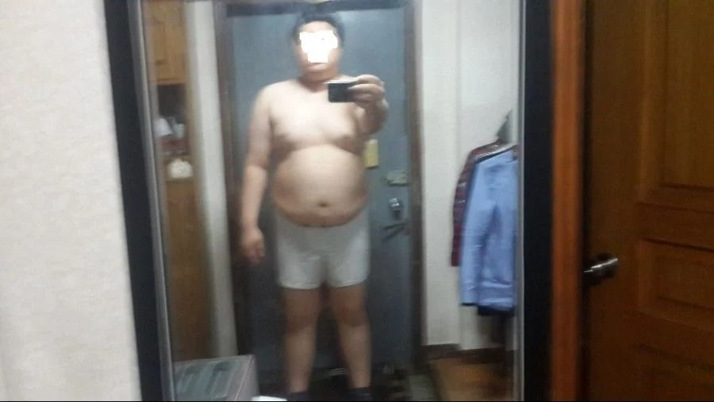
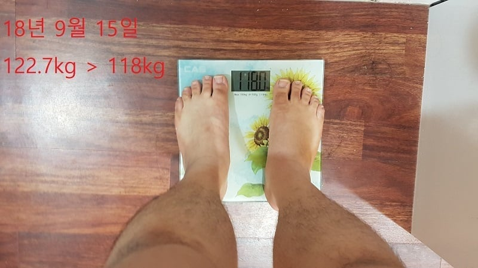
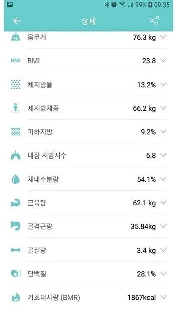
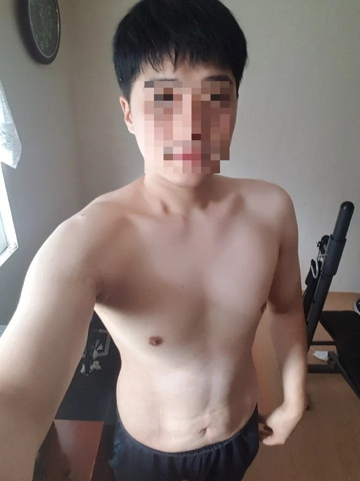
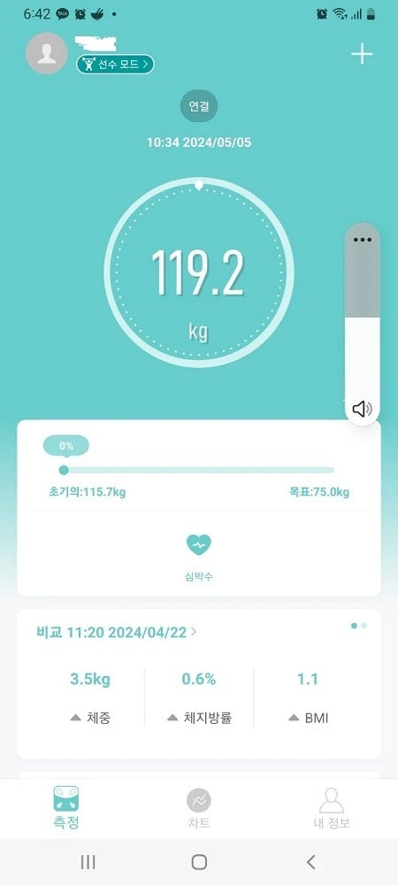
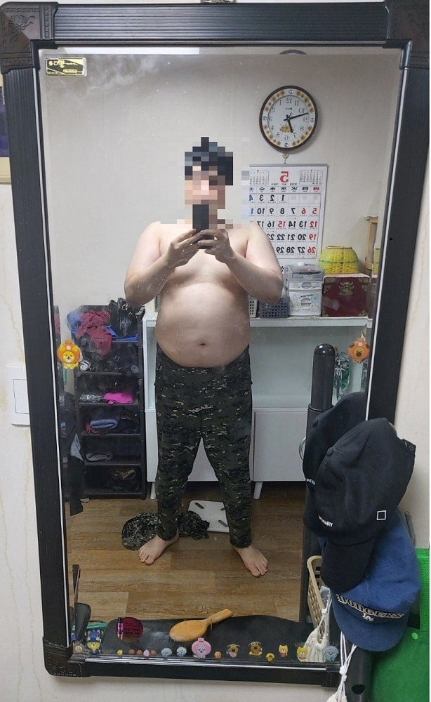
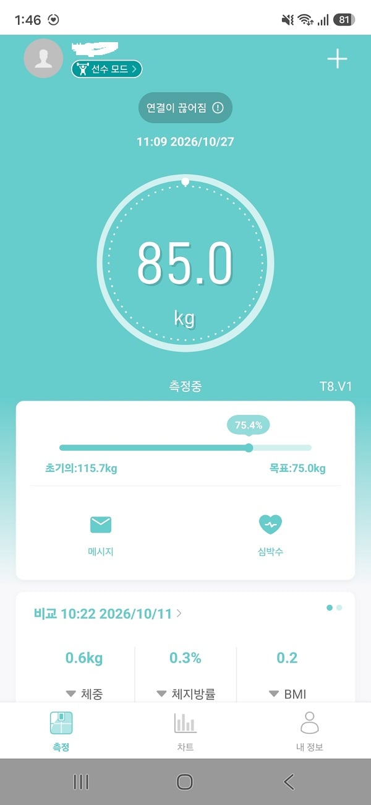

이상태로 유지 할줄 알았음


몸 복구 시킴 ㅠ......

다시 재 다이어트 중
잘자기... 스트레스 관리 식습관?? 말이야 쉽지..
쉽지 않다고 시발!!! 인생은 파란만장 하다고 ㅠㅠ
46키로 감량후에 계속 그렇게 살줄 알았음..
눈떠보니 낯선 천장을 바라본 사고난후에.. 고삐 풀리고 쉽지 않더라
이야 아무리 약 도움 받는다고 해도 너도 노력 많이 했겠네 ㅅㄱ했다